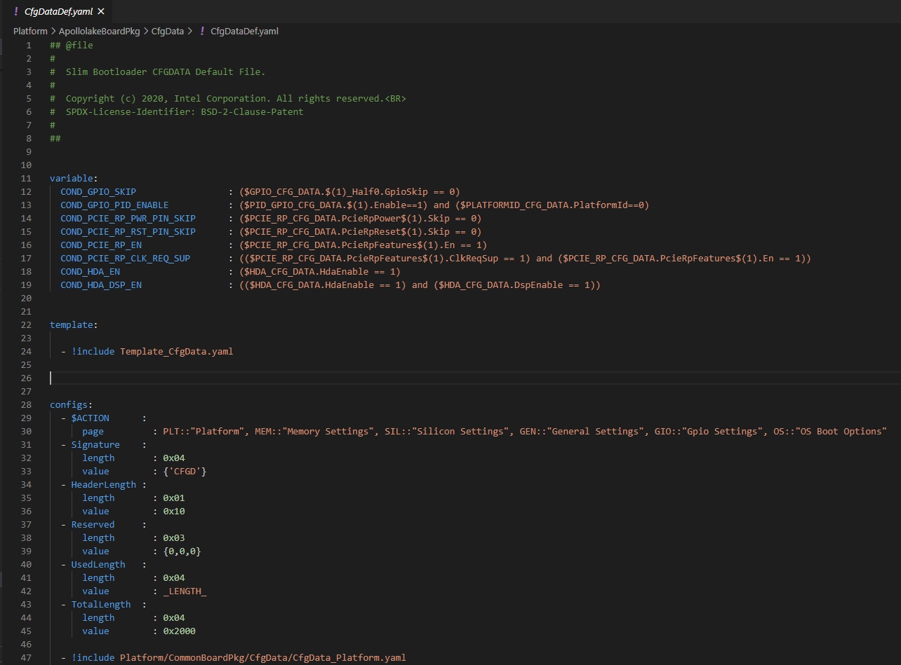

SBL Configuration
Version
0.5
Purpose
The purpose of this document is to describe the design of the configuration infrastructure of Slim Bootloader as well as to document the relevant definitions, data structures, interfaces, and describe how the configuration data fits into the Slim Bootloader.
Overview
The design rationale behind the Slim Bootloader configuration comes from the requirement that Slim Bootloader must be simple and flexible to adapt to new/custom hardware. The configurability will allow customers to modify the settings required for a specific board so that the Slim Bootloader can work on this new board without additional code changes.
SBL consists of configuration data that includes configuration parameters used during various phases of platform initialization. Configuration parameters are typically categorized as Platform, Memory, Silicon, Generic, Security, GPIO, OS Boot Options, and so on. Configuration parameters are grouped and identified by Configuration tags and different flavors of the configuration parameters are identified using platform identifiers.
SBL configuration parameters are packaged in a configuration data blob that can be stitched to be part of the BIOS region, or customers may choose to keep it in the PDR region separately. The configuration data blob can be customized using a GUI tool called Configuration Editor.
There may be more than one source of configuration data and it is typical to have at least two sources of configuration data – Internal for built-in defaults and external to support customized data for different platform flavors. The default configuration data is generated during compile time and built as part of the SBL binary. It usually carries configuration data for reference boards.
SBL loads the configuration data blob during the ‘Stage1B’ phase. It loads the external config data first, followed by appending the built-in default configuration. If both built-in default and external configuration data are present, priority of loading the data for each configuration tag (PLATFORM_CFG_DATA, SILICON_CFG_DATA, and so on) is first given to the external config data. If a particular tag is not present in the external configuration data, then the built-in default configuration data is consumed by the SBL.
Configuration Infrastructure
The foundation for the configuration infrastructure lies in the platform-specific YAML files, which is the core of all the configuration parameters in the SBL. This is the single Input source file that can generate all the required output configuration files automatically.
In addition to the YAML file, SBL provides a set of tools to implement the configuration infrastructure.
A high-level view of the configuration process is shown below.

YAML Files
The declarations required to build the Slim Bootloader configuration data blob and the header files are provided in a custom format and uses YAML Syntax . YAML configuration files, in general are located in project specific board folder, while some common configuration files are located at PlatformCommonBoardPkgCfgData.
Note that the configuration parameters in this YAML file provide the configuration baseline and will match the most common board/SoC settings that are used for a specific project.
DLT File
DLT (delta) files are used to provide overrides to settings in YAML files to address board-level differences. Note that Delta files are NOT auto-generated files.
Each board can have one DLT file. A project may include multiple DLT files to handle multiple boards and can be found in the same location where the base configuration YAML file resides within the Platform-specific folder of the SBL source.
Configuration Tools
Configuration YAML files will be processed by configuration tools like GenCfgData, CfgDataTool, CfgDataStitch in order to generate the configuration header files and binary blobs.
C Header Files
Header files are generated from the YAML files during the build process and will be used by the SBL source to typecast related configuration binary blobs into detailed configuration fields so that it can be fed back into board initialization policies such as FSP UPDs, GPIO table, platform ID, memory parameters, and others.
To be specific, ConfigDataStruct.h and ConfigDataBlob.h are the configuration header files that will be auto-generated by the build tool.
Also, the Tag IDs are automatically generated from YAML file into ConfigDataStruct.h.
Binary Files
Base Configuration Binary
This is the base configuration data, CfgDataDef.bin generated using just the base configuration YAML file, CfgDataDef.yaml located under the project-specific folder.
Configuration parameter deltas from the DLT files are not included in this binary.
Default Configuration
This is the default internal configuration data binary blob, CfgDataInt.bin, which is a ‘merged’ binary of the base configuration parameters with the configuration deltas from the internal DLT file(s). Default configuration data does not need to be signed. Instead, it is verified as part of the Slim Bootloader Stage1B verification flow.
Input for this binary generation is the CfgDataDef.yaml plus additional delta (DLT) files specified at _CFGDATA_INT_FILE in BoardConfig.py for different platform IDs of the same SOC. All these files (CfgDataDef.yaml + internal .DLT(s)) will be ‘merged’ by the CfgDataTool which will be part of the final image.
Example command to generate the merged default binary using CfgDataTool
python BootloaderCorePkg\Tools\CfgDataTool.py merge -o CfgDataInt.bin CfgDataBrd1_internalRVP7.bin CfgDataBrd2_intRVP11.bin
Standalone/Custom External Configuration
This is the custom configuration data, CfgData_Ext_xx.bin stitched into the integrated firmware image.
Input for this custom/standalone binary generation is CfgDataDef.yaml plus additional delta (DLT) files specified at _CFGDATA_EXT_FILE in BoardConfig.py. All these files (CfgDataDef.yaml + <custominternal.DLT(s)) will be ‘merged’ as part of the final standalone/custom config binary blob.
This external configuration data blob needs to be signed. The signature is checked before loading. If the signature check fails, the standalone configuration data blob will be ignored by SBL and only the default configuration will be used as the final configuration data.
External configuration takes higher priority over the default static configuration data.
Each board flavor will have one external standalone binary that can be generated from the external/custom DLT files.
Example command to generate the merged custom/standalone external configuration binary using CfgDataTool
python BootloaderCorePkg/Tools/CfgDataTool.py merge -o CfgData_Ext_xx.bin CfgDataInt.bin extcfg_brd1.bin extcfg_brd2.bin
Note
CfgDataInt.bin is required as one of the input files for size optimization purposes.
Configuration Blob Structure
Configuration binary blob contains configuration parameters for multiple different boards. The configuration binary blob starts with a configuration blob header followed by the actual configuration data payload. The configuration data payload contains various configuration parameters organized as configuration blocks. Each configuration block contains a block header followed by detailed parameter structure.
Each configuration block is identified by a unique identification tag as described in the YAML file. The configuration parameters associated with a specific ‘platform ID’ can be filtered out using the CDATA_HEADER.Value bit mask embedded in the configuration tag header. Bit ‘N’ of CDATA_HEADER.Value indicates if this configuration parameter is applicable for platform ID ‘N’. This is especially useful when a single binary is required to support many different boards that can be uniquely identified by platform ID. Since it is a 32-bit bit mask, it currently supports 0 to 31 as platform ID values.
Platform ID can be specified in the board-specific DLT file.
PLATFORMID_CFG_DATA.PlatformId | 0x16
Configuration BLOB Layout
Config BLOB Header
Configuration data blob starts with a header CDATA_BLOB_HEADER.
typedef struct {
UINT32 Signature;
UINT8 HeaderLength;
UINT8 Attribute;
UINT16 InternalDataOffset; // Internal config data offset in DWORD within the data blob. This value is only valid in runtime.
UINT32 UsedLength; // The total valid configuration data length including this header.
UINT32 TotalLength; // The total space for configuration data including this header.
} CDATA_BLOB_HEADER;
Config Data
The configuration blob header is followed by a series of configuration data structures each with a CDATA_HEADER. The CDATA_HEADER has the tag field which can be used to identify the structure.
typedef struct {
UINT32 ConditionNum : 2; // [1:0] #of condition words present
UINT32 Length : 10; // [11:2] total size of item i.e;CDATA payload data length (in dwords)
UINT32 Flags : 4; // [15:12] reserved. Currently used by CfgDataTool
UINT32 Version : 4; // [19:16] item (payload) format version
UINT32 Tag : 12; // [31:20] identifies item (in payload)
UINT32 Value; // Bit masks on supported platforms
} CDATA_HEADER;
Configuration Flow
Often, it may be necessary that a single bootloader binary to support many different boards using the same silicon. Each of the board flavors may have different configuration and ideally can be handled by using different settings for the configuration parameters.
The configuration settings for different boards are supported through different platform identifiers. Slim Bootloader supports up to 32 platform identifiers with 16 allocated for static identifiers and 16 for dynamic identifiers. Since platform identifier 0 is reserved value and cannot be used for identifying a board, Slim Bootloader can support configuration parameters for 31 boards (1-31), identified by the PlatformId field.
While it may be possible to replicate all configuration parameters for each of the platform identifiers, this is not optimal in terms of flash and memory requirements. Slim Bootloader uses a bitmask of platform identifiers for configuration parameters to consolidate common configuration parameters.
To support this requirement, it is necessary to come up with a flow that can support multiple platform configurations and merge all the configuration within a single custom configuration binary blob.
Diagrams in the following subsections illustrate the overall flow of how multiple platform configuration data can be supported.
Multiple Platform Config Data Generation

Multiple Platform Config Data Merge
Configuration Description (YAML) Explained
The declarations required to build the Slim Bootloader configuration data blobs and the header files are provided in a configuration description file. This file uses the YAML syntax.
YAML (https://yaml.org/) is a data serialization language designed to be human-friendly and work well with modern programming languages. A quick syntax reference can be found here - https://yaml.org/refcard.html
Configuration YAML files will be processed by configuration tools like GenCfgData, CfgDataTool, CfgDataStitch in order to generate the configuration header files and binary blobs.
The main platform configuration file is specified in CfgDataDef.yaml. Please note that you may find many YAML files. However, only CfgDataDef.yaml is the primary file used for the platform configuration, and other sub YAML files will be included by the primary YAML file to provide component specific configuration.
An example configuration file in YAML syntax is provided below.
File Layout
The configuration YAML file has a basic organization as below
Variable declarations
Template declarations
Configuration declarations
Meta-Data Markers
The configuration YAML files uses the $ sign as meta-data indicator. This is used by the SBL configuration parsing tools.
The current specification version supports the following meta-data markers.
$ACTION
$ACTION is a meta-data marker and is followed by a YAML mapping node that contains some meta-data. The following attributes are supported currently.
PAGE
PAGE is used to declare a list of pages used in the GUI.
PAGE is also used to define the display scope for a configuration parameter and can be applied for individual configuration parameters.
In this way multiple configuration parameters can be grouped to be visually displayed together in the same page in GUI.
Since the page: value(s) is a meta-data used by the tool (not a configuration option itself), it has be preceded by the $ACTION node.
Format:
page: PageId1:ParentPageId1:PageTxetDescription1, PageId2:ParentPageId2:PageTxetDescription2
If a root page needs to be defined, the ParentPageId could be empty as below:
page: RootPageId::RootPageTxetDescription
$STRUCT
STRUCT directive is used to indicate a nested structure within a configuration structure.
For example, consider the nested structure below:
typedef struct {
UINT32 Acpi : 1;
UINT32 MeasuredBoot : 1;
UINT32 Vt : 1;
UINT32 eMMCTuning : 1;
UINT32 DciDebug : 1;
UINT32 Rsvd1 : 27;
} FEATURES_DATA;
typedef struct {
FEATURES_DATA Features;
} FEATURES_CFG_DATA;
The following example shows this declaration using a $STRUCT as shown below
- $ACTION :
page : FEATURES:PLT:"Features"
- FEATURES_CFG_DATA :
- !expand { CFGHDR_TMPL : [ FEATURES_CFG_DATA, 0x310, 0, 0 ] }
- !expand { FEATURES_TMPL : [ 0x0000001F ] }
Variable
Variables may be considered as something equivalent to a C language macro. Variables are primarily used as symbolic names given to Python expressions. Whenever the variable name is used, it is replaced by the contents of the macro. Variables should only be defined in variable section.
Example:
variable:
COND_GPIO_SKIP : ($GPIO_CFG_DATA.$(1)_Half0.GpioSkip == 0)
Template
Templates are used to declare the format of configuration options and are useful when many configuration options of the similar type are needed. GPIO configuration option is a good example where templates are useful. A platform may have a lot of GPIO pins and instead of declaring configuration options for GPIO_1, GPIO_2, GPIO_3, etc., a template for GPIO can be declared and each GPIO can reuse the same configuration template with different values as needed.
Templates should be declared in template section only, and should always be represented as a mapping node using folded block style indicated by a right angle bracket (>).
Templates support reference to parameters to customize the expansion. $(n) can be used to refer to the Nth parameter passed into this template macro by !expland tag. During expansion, $(n) will be substituted with the actual Nth parameter.
For example, a template for PCIe root port configuration is shown below:
PCIERP_TMPL: >
- PcieRpFeatures$(1) :
- $STRUCT :
name : PCIE RP $(1) Config Data
struct : PCIE_RP_FEAT[]
length : 0x01
value : $(2)
- En :
name : PCIE RP Enable
type : Combo
option : $EN_DIS
help : >
ENABLE- Enable this PCIE RP. DISABLE- Disable this PCIE RP
order : 0000.0000
length : 1bB
- ClkReqSup :
name : PCIE RP Clk Req Support
type : Combo
option : $EN_DIS
help : >
Enable/Disable CLKREQ# Support
condition : $(COND_PCIE_RP_EN)
length : 1bB
- ClkReqNum :
name : PCIE RP Clk Req Number
type : EditNum, HEX, (0x00, 0xFF)
help : >
Configure Root Port CLKREQ Number if CLKREQ is supported
condition : $(COND_PCIE_RP_CLK_REQ_SUP)
length : 3bB
- Aspm :
name : PCIE RP Aspm
type : EditNum, HEX, (0x00, 0xFF)
help : >
PCI Express Active State Power Management settings
condition : $(COND_PCIE_RP_EN)
length : 3bB
Now, multiple PCIe root part configurations are declared using !expand (!EXPAND) as below:
- PCIE_RP_CFG_DATA :
- !expand { CFGHDR_TMPL : [ PCIE_RP_CFG_DATA, 0x302, 0, 0 ] }
- !expand { PCIERP_TMPL : [ 0 , 0x8B ] }
- !expand { PCIERP_TMPL : [ 1 , 0x8F ] }
- !expand { PCIERP_TMPL : [ 2 , 0x87 ] }
- !expand { PCIERP_TMPL : [ 3 , 0x86 ] }
- !expand { PCIERP_TMPL : [ 4 , 0x83 ] }
- !expand { PCIERP_TMPL : [ 5 , 0x8E ] }
Configs
This section contains the configuration option declarations.
A YAML node represents a single native data structure. A mapping node is an unordered set of key: value node pairs. Mappings use a colon and space (”: “) to mark each key: value pair.
A block sequence is simply a series of nodes, each denoted by a leading “-” indicator. The “-” indicator must be separated from the node by white space. YAML’s block collections use indentation for scope and begin each entry on its own line.
SBL configuration options are a series of YAML block sequence and form a YAML block collection.
Every ConfigDataDef.yaml configs section starts with the declaration for the CDATA_BLOB_HEADER as shown in Config BLOB Header followed by a series of configuration data identied by unique tags:
configs:
- $ACTION :
page : PageId1::"Page Display Text", PageId2::"Page Display Text", PageId3::"Page Display Text", ...
- Signature :
length : 0x04
value : {'CFGD'}
- HeaderLength :
length : 0x01
value : 0x10
- Reserved :
length : 0x03
value : {0,0,0}
- UsedLength :
length : 0x04
value : _LENGTH_
- TotalLength :
length : 0x04
value : 0x2000
As discussed in SBL Configuration Tags, SBL configuration options are organized as groups.
- Each group is represented as a YAML block sequence and starts with a leading "-" indicator followed by a white space.
- Each group has a configuration header. The Configuration header is declared using "!expand" tag to expand a template declaration. The configuration header itself is a YAML block sequence
- Each configuration option within the group is also a block sequence made of mapping nodes, each with key:value pair.
The following example will illustrate how a MrcFastBoot config option is declared
- MrcFastBoot :
name : MrcFastBoot
type : Combo
option : $EN_DIS
help : >
Enable/Disable MRC fast boot support
length : 0x01
value : 0x1
The below shows the MrcFastBoot config option being under MEMORY_CFG_DATA.
- MEMORY_CFG_DATA :
- !expand { CFGHDR_TMPL : [ MEMORY_CFG_DATA, 0x200, 0, 0 ] }
- MrcFastBoot :
name : MrcFastBoot
type : Combo
option : $EN_DIS
help : >
Enable/Disable MRC fast boot support
length : 0x01
value : 0x1
Example showing the MrcFastBoot config option being under MEMORY_CFG_DATA which is displayed in a “MEM” page.
- $ACTION :
page : MEM
- MEMORY_CFG_DATA :
- !expand { CFGHDR_TMPL : [ MEMORY_CFG_DATA, 0x200, 0, 0 ] }
- MrcFastBoot :
name : MrcFastBoot
type : Combo
option : $EN_DIS
help : >
Enable/Disable MRC fast boot support
length : 0x01
value : 0x1
Configuration Option Nodes
The below sections explain each of the “keys” used in a configuration option.
NAME
NAME gives a plain-text label for a configuration parameter. This is the text label that is displayed in the Config Editor tool.
Format:
name: CfgItemName
Example:
name : MrcFastBoot
TYPE
TYPE defines the format of a configuration parameter that will be represented in the Config Editor tool. There are 5 different types available for configuration parameters: EditNum, EditText, Combo, Table, Reserved
EditNum
EditNum is used when user needs to input any value within the range defined. If the configuration option is an array, the VALUE field is used to specify the number of elements in the array.
Format:
type : EditNum, NumType, (MinValue, MaxValue)
NumType could be **HEX** (Hexa-Decimal format) or **DEC** (Decimal format)
The MinValue and MaxValue is the minimum and maximum value allowed.
EditText
EditText is used when user needs to input any text string.
Format:
type : EditText
Combo
Combo is used to select from a drop-down list along. This list will be provided by OPTION field.
Format:
type : Combo
option : val1:text1, val2:text2, val3:text3, ...
Example:
type : Combo
option : 0:9600, 1:19200, 2:38400, 3:57600, 4:115200
Table
Table is used to define a tabular format. It needs to be used along with OPTION field to provide additional information for the table including column header string, cell width and cell format. Further, the VALUE field specifies the total number of elements in the table.
Format:
type : Table
option : ColumnHdr1:width:format, ColumnHdr2:width:format, ColumnHdr3:width:format, ...
ColumnHdr’n’ sepcifier indicates the string to be displayed as the column header. width indicates the cell width in number of bytes format is the number format and should be HEX
Example:
type : Table
option : >
0:1:HEX, 1:1:HEX, 2:1:HEX, 3:1:HEX, 4:1:HEX, 5:1:HEX, 6:1:HEX, 7:1:HEX, 8:1:HEX, 9:1:HEX, A:1:HEX, B:1:HEX, C:1:HEX, D:1:HEX, E:1:HEX, F:1:HEX
Byte width in each cell of the table can be displayed as 1 byte, 2 bytes or 4 bytes.
Reserved
Reserved type can be used to prevent configuration parameters from being displayed in the Config Editor. This type will not be generated as part of the DLT file output. But the configuration parameters will still be generated in the auto-generated C header structure.
Format:
type : Reserved
Constant
Constant type can be used to describe an item that should not be configured by the Config Editor, it always holds a constant value. Similar to Reserved type the Config Editor will not display it. But different from Reserved type, this type will be generated as part of the DLT file output.
Format:
type : Constant
Altpage
Alternate page allows a specific configuration item to appear at multiple pages as desired. Lets describe this using an example.
- MEMORY_CFG_DATA :
- HyperThreading :
name : HyperThreading
altpage: TCC_SETTINGS
type : Combo
option : $EN_DIS
help : >
Enable or Disable Hyper Threading; 0- Disable; <b>1- Enable</b>
length : 0x01
value : 0x1
HyperThreading is a configuration option which is defined under MEMORY_CFG_DATA. The same can appear in a different page say “TCCSETTINGS” with the help of keyword ‘altpage’ as shown above. The same value will be reflected at both places and when changed in one page, the changed value is reflected in the alternate page as well.
This option can be useful when user wants to create a feature specific page or want to group specific config options related to a feature into separate page without affecting the original configuration present in the parent page.
OPTION
This allows to provide type-specific additional information. For type Combo, it defines the drop-down list. For type Table, it defines the column display information.
Format:
OPTION: > Value1:TextStr1, Value2:TextStr2, ….
Note
Config tools allow the value/contents for OPTION to be split into multiple lines. The lines except for the very first line need to start with ‘+’ (plus sign) to tell the parsing tool to append this string to previous one.
HELP
This defines what will appear in the ‘help’ text when hovering over the field in the UI tool.
Format:
help: > Any detail about particular CfgItem
Example:
help: > Enable/disable LAN controller
Note
Config tools allow the value/contents for HELP to be split into multiple lines. The lines except for the very first line need to start with ‘+’ (plus sign) to tell the parsing tool to append this string to previous one.
CONDITION
CONDITION is used to associate conditional statement for a configuration parameter when required. It is useful to dynamically hide/display a configuration parameter that has a dependency on another configuration parameter value. When the condition is TRUE, the configuration parameter is visible. Otherwise, it is hidden.
Format:
condition: Expression
Expression is an expression following Python* syntax. It can have reference to another configuration parameter using $CfgItemName or $CfgItemName.BitField format. It can use variables as described in 3.3
Example:
condition : $GPIO_CFG_DATA.GpioPinConfig1_$(1).GPIOSkip_$(1) == 0
condition : $SECURITY_CFG_DATA.EnableSgx != 0 and $SECURITY_CFG_DATA.EpochUpdate == 2
ORDER
ORDER can be used to adjust the display order for the configuration parameters in a page. By default, if this command is not specified, the order value is assigned to be the CfgitemOffset as the logic described below. But if a different order is required, it can be overridden by declaring ORDER command explicitly using format:
order : {HexMajor.HexMinor}
The final order key is calculated as:
Order = (HexMajor << 16) + (((HexMajor & 0xFF) << 8) + BitFieldOffset
If ORDER {HexMajor.HexMinor} is not specified for an item, it is calculated as: Order = (CfgItemOffset << 16)
The item order value is used as the sort key during YAML items display.
Example:
order :{0000.0000}
order :{0x0040.01}
LENGTH
Length is used to specify the size of the configuration option in bytes. Length can also be specified in bits by appending ‘b’ at the end.
Example:
length : 1b
length : 0x04
VALUE
Value is used to specify the default value of the configuration option. It could be a number, string, or data array.
For number, it can be DEC or HEX. HEX needs to have prefix ‘0x’.
For array, { } braces are required around the element list. List elements should be numbers and are separated by comma. Each element should have the same unit size (1, 2, 4, 8 bytes). By default, it is BYTE for each element. The unit size can be changed through an extended dummy element at the beginning of the array, noted as “0:0[B|W|D|Q]”.
For string, single or double quotes are required.
Example:
value : 0xFF
value : {0, 1, 3, 2, 4, 5, 6, 7}
{0:0B, 0x01, 0x02, 0x03, 0x04, 0x05, 0x06, 0x07, 0x08}
{0:0W, 0x0201, 0x0403, 0x0605, 0x0807}
{0:0D, 0x04030201, 0x08070605}
{0:0Q, 0x0807060504030201}
value : 'FwuImage.bin'
Delta (DLT) File Explained
Configuration Delta (DLT) file is an extension of the base configuration YAML file that contains configuration parameters that need to be overridden from base configuration.
Each board flavor can have one DLT file specified. YAML and DLT files reside at the Platform folder in Slim bootloader source. Delta files are NOT auto-generated files.
In addition to board-specific delta files, a delta file that overrides configuration parameters for all boards (board ID 0) is also supported. Users can add/create new DLT file for each board flavor of the same SOC with the help of board-specific PlatformId (1 – 31) that should be specified in each file. Parsing tool will then calculate bit mask/value for each tag that is included in base configuration YAML against each board’s PlatformID specified in .DLT and populates relevant data based on PlatformID in the form of binaries (.bin) for each of the boards.
If config parameters did not change for a tag, data is taken from base configuration itself. If it has changed for a particular tag mentioned in .DLT, new data from DLT will be overwritten and gets generated in the configuration binary for that specific board.
DLT file rules
Users cannot add/create a new configuration parameter in DLT file, nor can they create a new tag. Users can only modify/overwrite the values for configuration parameters that are already existing in the base configuration YAML file.
Delta file can be used to generate both default and custom/standalone config data. Delta file is like changing configuration items using ConfigEditor (explained later).
Delta file cannot be opened in UI interface all by itself. But it’s possible to open in ConfigEditor by first loading the base configuration YAML, and then load DLT file on top of it. We can then see overrides in ConfigEditor that is mentioned in DLT.
Delta files should be included as part of the Board Configuration script, BoardConfig.py in order to take effect.
Example:
self._CFGDATA_INT_FILE = ['CfgData_Int_Brd0_Def.dlt'] self._CFGDATA_EXT_FILE = ['CfgData_Ext_Brd1_Rvp.dlt','CfgData_Ext_Brd2_Crb.dlt','CfgData_Ext_Brd3_Bmp.dlt']
‘_CFGDATA_INT_FILE’ is used for all the default board flavors. Delta files included here is generated as part of the default configuration data consumed within the Slim bootloader source.
‘_CFGDATA_EXT_FILE’ is used for external/customer boards. Delta files included here is generated as a standalone binary and stitched into the BIOS region of the SPI Flash.
Below are the current formats that can be used in DLT:
Hash “#” symbol indicates comments in the DLT file.
Users can overwrite the values of existing Tag items in DLT as follows
Format:
Tagname.itemname(s) | <data value>
Example:
PLATFORMID_CFG_DATA.PlatformId | 1
Example:
GPIO_CFG_DATA.GpioPinConfig1_GPP_A0.GPIOSkip_GPP_A0 | 1
Granularity of the data is based upon the size of the configuration parameters specified in the base configuration YAML file. In the above example, PlatformID in base configuration YAML is defined as 2 bytes. So, the value should be mentioned according to its size. Similarly, GPIOSkip field in base configuration YAML is defined as 1 byte. So, the value to be mentioned in DLT can either be 0 or 1. If we want to overwrite the full DWORD instead of individual bits, for example, GPIO PIN Config DWord0 or DWord1, it can be specified as follows, example: GPIO_CFG_DATA.GpioPinConfig0_GPP_A0 | 0x12345678
Note
Customers who have access to source code can change DLT files without having to use ConfigEditor GUI interface and any other configuration tools if they are able to build and stitch the Slim Bootloader source. All the commands used to generate, merge, sign the binaries are all part of the CfgDataTool, which is already part of the build process. They will be auto generated, merged, and signed as we run the build/stitch commands with no manual steps needed to create the final Configuration binary blob.
Configuration Process
Configuration data flow begins with the base configuration YAML file along with delta (DLT) files that contain the overrides of configuration settings that are different from base configuration data. CfgDataTool parses YAML and DLT file(s) and GenCfgData auto-generates each DLT’s binary file.
The new board-specific config binary(ies) generated from the DLT files will then be ‘merged’ by CfgDataTool along with default config binary files (CfgDataInt.bin*) that were previously generated for each board flavor.
Merged configuration binary will then be ‘signed’ by CfgDataTool with a Private Key.
Signed configuration binary will be the ‘final’ custom/standalone configuration binary (Example: CFG_EXT_SIGNED.bin) that is placed in PDR or BIOS region and stitched into the final image that is to be flashed in SPI.
All these steps are executed as part of the Slim Bootloader build process. In addition to generation and stitching of configuration binaries through SBL build, editing of configuration parameters post build is also supported. Please see Step-by-step Configuration Flow for details.